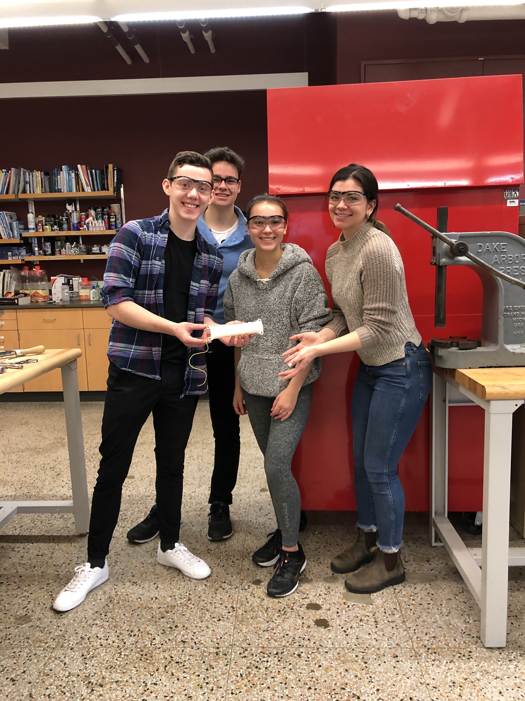

Plastic Lathe Carriage
Introduction
The assignment for ME360: Product Design. I worked in a group of 4 and my main contribution was with the design of the product and assembly and motion study of the device in Solidworks. The device is made of Aluminum and can move in the x and y axes and spin on the x axis. Initial Sketch
CAD Drawings
Results
The device worked perfectly in solidworks but still needs to be constructed. We were unable to construct this device due to the Covid-19 pandemic.
Areas of Improvement
An area of improvement for this product would be manufacturing and assembling it. We were planning on using a treadmill motor as the motor for the lathe. This would have allowed us to cut plastics such as PLA or ABS.
Learning Moments
From this project, I learned how productive people can be from home. All of my group members contributed equally and we were all checking in on each other at every point during the project.
This was my team:
From left to right: Jordon Bibian (me), Federico Coppo, Lauren Berlinghof, Jackie Dell